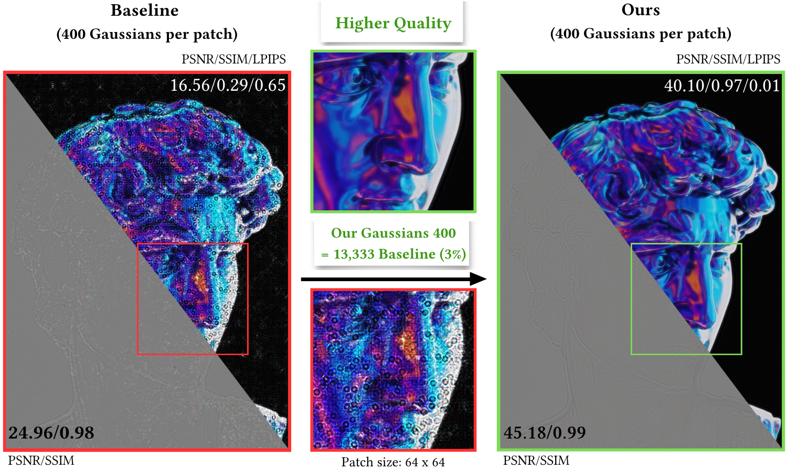

Xiaoyue🌙
MSc AI @ UCL
Here is Merry! I'm currently a research intern at the Computational Light Laboratory led by Kaan Akşit. I received my MSc in Artificial Intelligence from University College London and BSc in Computer Science from University of Macau. I'm passionate about 3D scene reconstruction, computational imaging, and biomarkers — basically cool ideas that bring us closer to a fully immersive, photorealistic world!
Master's thesis Compressing Double-Phase Holograms using 2D Gaussians is accepted at Eurographics 2026 Poster Track!
I officially graduated from UCL with Distinction🎓!
I started my MSc journey in Artificial Intelligence for Sustainable Development at UCL!

Compressing Double-Phase Holograms using 2D Gaussians
Eurographics 2026 Poster Track, Aachen, Germany, May 2026